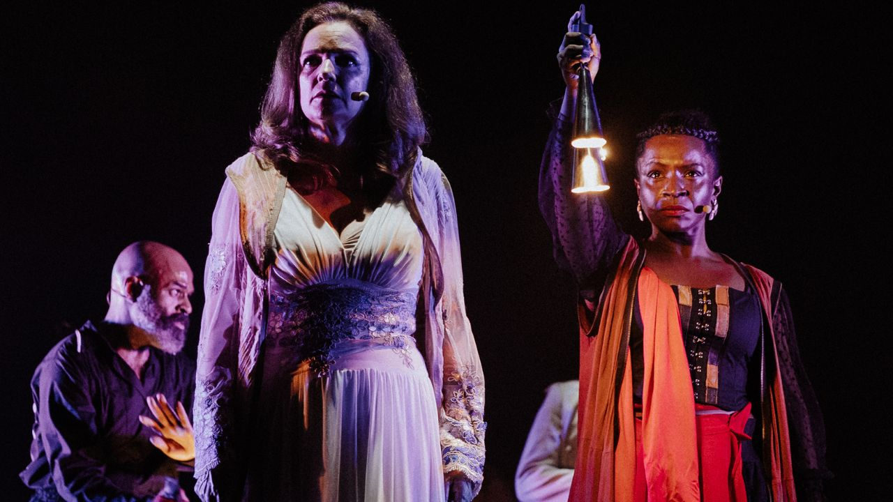

As Armas Milagrosas: seis personagens à procura da existência reestreia no TUSP

Adaptação dramatúrgica articula o metateatro de Luigi Pirandello e a poética anticolonial de Aimé Césaire para discutir racismo estrutural e disputas por visibilidade no Brasil contemporâneo.
De volta aos palcos desde 21 de janeiro, no TUSP da Maria Antônia, o espetáculo “As Armas Milagrosas: seis personagens à procura da existência” propõe uma metaficção que fricciona referências de Luigi Pirandello e Aimé Césaire para pensar representação, apagamento e existência no Brasil contemporâneo.
A encenação parte do ensaio de uma comédia de Pirandello: em cena, funcionários negros do teatro interrompem a peça e reivindicam o direito de narrar a própria história. Com esse gesto, o palco se torna um campo simbólico de disputa entre personagens/personas brancos e negros, visibilidade e apagamento, representação e existência.
Um encontro entre Pirandello e Césaire para discutir autoria e direito à existência
Idealizado e dirigido por Anderson Negreiro e pela diretora colombiana Daniela Manrique, o projeto reúne autores de contextos distintos, atravessados por uma questão comum: o direito à existência e à autoria.
A ideia surgiu em 2021, quando Anderson Negreiro trabalhou com o texto “E os cães se calavam”, tragédia de Aimé Césaire presente na coletânea de poemas “As Armas Milagrosas”. Esse contato foi revisitado posteriormente a partir da releitura do clássico “Seis Personagens à Procura de um Autor”, de Pirandello.
“Percebi que aquelas personagens que entram pela coxia em busca de um autor, reivindicando a continuidade da própria existência, poderiam ser corpos reais — personagens da branquitude que, mais do que personagens ficcionais, lutam por existir e afirmar sua autoria no mundo”, afirmam os diretores.
Nova dramaturgia substitui personagens de Pirandello por figuras de Césaire
Na nova dramaturgia, as seis personagens originais do texto de Pirandello são substituídas por personagens presentes na obra de Césaire — o Rebelde, a Mãe e o Coro — representadas como funcionários de um teatro. Essas figuras deixam de ser personagens ficcionais e passam a ser corpos reais, racializados, que reivindicam o direito de existir e de se expressar por meio da arte.
A luz como dispositivo: centro e margem em disputa
A encenação incorpora referências ao livro de Lilia Schwarcz, “Imagens da Branquitude – Presença e ausência”, para pensar como pessoas negras aparecem em pinturas ao longo das décadas — à margem, ao fundo, em perspectiva — enquanto figuras brancas ocupam o centro e a luz.
“Pensando nisso, me veio a ideia de trabalhar com conceitos presentes no livro da Lilia Schwarcz, “Imagens da Branquitude – Presença e ausência”… A partir disso, percebi que a própria luz poderia ser o dispositivo da encenação”, afirma Anderson Negreiro.
A partir dessas contribuições, “As Armas Milagrosas: seis personagens à procura da existência” estrutura-se inteiramente a partir da luz. O desenho de luz, criado por Matheus Brant, organiza o espaço em torno de um cubo central iluminado que separa centro e margem.
“A luz é a dramaturgia que revela a separação dos corpos. É por meio dela que a gente torna visível uma estrutura que normalmente não se vê — o racismo que organiza quem está no centro e quem fica à margem”, afirma Anderson Negreiro.
No interior do cubo estão o Primeiro Ator e a Primeira Atriz, representações alegóricas da branquitude. À margem, permanecem os funcionários negros do teatro — inspirados nas personagens de Césaire — que operam o espaço e tentam atravessar a fronteira luminosa.
Sem cenário fixo, a montagem utiliza um carpete e adereços pontuais, fazendo da iluminação o principal elemento visual e narrativo. A peça se constrói como um ensaio interrompido, em que figuras negras reivindicam presença e impõem novas vozes à cena, deslocando hierarquias entre quem é visto e quem é invisibilizado.
Sinopse
A obra “As Armas Milagrosas: seis personagens à procura de existência” fricciona “Seis Personagens à Procura de Autor”, de Luigi Pirandello, e “Os Cães se calavam”, tragédia de Aimé Césaire, para discutir existência, raça e representação. Durante um ensaio teatral, funcionários negros do próprio teatro interrompem a cena e reivindicam o direito de narrar sua história. A partir desse embate, o espetáculo transforma o palco em um espaço de confronto simbólico entre a representação tradicional e a insurgência de novas vozes, culminando em um gesto de ruptura com o olhar colonial.
Serviço
“As Armas Milagrosas: seis personagens à procura da existência”Temporada: de 21 de janeiro a 08 de fevereiro de 2026
Horários: quarta a sábado, às 20h | domingos e feriados, às 18h
Sessão extra: 31 de janeiro, às 16h
Ingressos: gratuitos, com retirada 1 (uma) hora antes de cada sessão
Classificação: 14 anos | Duração: 120 minutos
TUSP – Teatro da USP
Rua Maria Antônia, 294, Vila BuarqueTelefone: (11) 2648-5222https://usp.br/tusp/